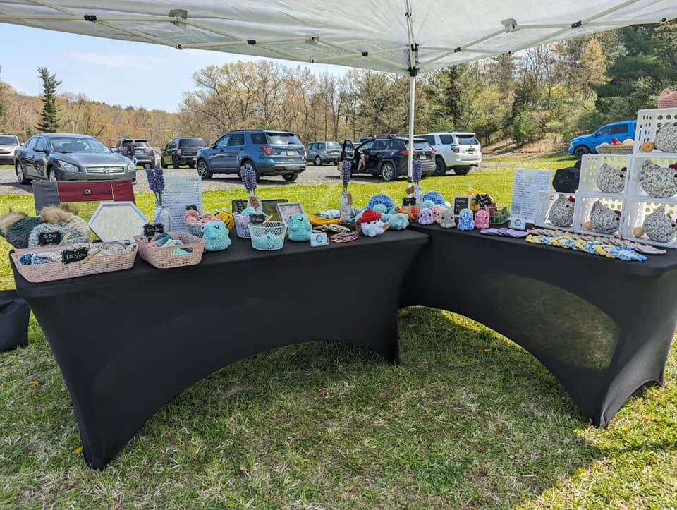
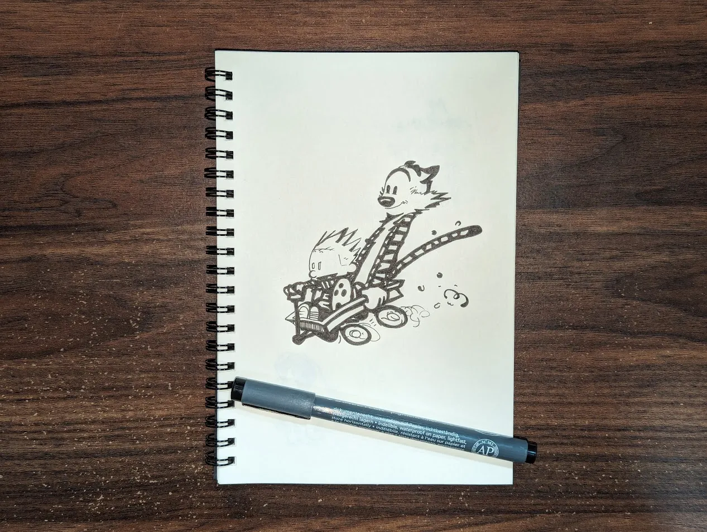

A Lot of New
This year has been the most unpredictable compared to previous ones. I’m not complaining, the unpredictability is something I’ve missed, especially since the 2020 lockdowns.
I started a new side-job as Managing Editor of Nightingale, a publication for data visualization professionals. I had spent the previous two years as a contributing writer and columnist. I now oversee the digital publication, while contributing to the print publication, as well. This is my first editing job, which was an adjustment, but I’ve had the opportunity to collaborate with industry leaders and other professional creatives, which has been a dream come true.
At Temple University, I’ve taken on an interim role as Associate Director of Analytics. Prior to this switch, I worked in executive communications; professional communications being where I’ve spent the majority of my career. After going to school for data analytics and visualization, I’ve seen promise in branching away from communications and pursuing a new form of storytelling, which data has been able to provide. Still working within the strategic marketing department, I get to continue working with teams I love but in a new capacity with different problems to solve and mistakes to make.
Weekend craft fairs
Last fall, my fiancé made the decision to open a crocheted-goods side business. The winter was spent building up her inventory. For the past few months, we’ve been spending selected weekends at various local craft fairs as vendors.
While she continues to build her online shop, the in-person events have allowed her to get direct feedback from customers on what they like. We’ve also met a few other vendors, all of which have been welcoming and friendly to new faces.
Trying to find my creative spark
Being a professional creative can be difficult, especially when you want to be creative outside of work. Between working at Temple, Nightingale, and the plethora of nonprofits I donate my creative brainpower to, I have been finding it increasingly difficult to muster up the creative spark for independent projects.
I know being surrounded by ‘new’ right now has caused me to burn out, but I’m confident I will find that spark again this summer.
I plan to return to a novel I’ve been writing since 2018. The first two drafts are completed, but I want to rework sections and continue building upon it before I consider publishing.
Pen and pencil drawing has been something I have been able to do, taking less creative brainpower than writing, and it’s something I can do away from a digital screen. Listening to music has proven to be a great source of inspiration, as well.
